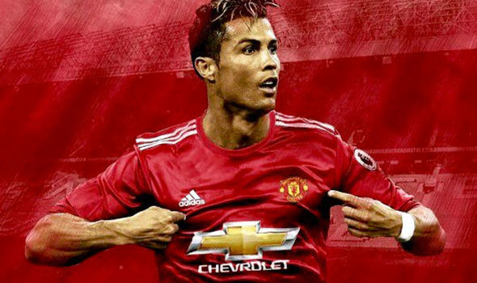

Alex Ferguson Era
Manchester United became known as one of the greatest club when they hired
Sir Alex Ferguson as their head coach and led them from 1986 to 2013. He was so
great that he was knighted in 1999 for his contribution to the football world in
europe. He had a rocky start but after that he had done the first and the impossible.
He had did the treble and the first of its kind, winning the premier league, UEFA Champions
league and the FA and knighted because of that in 1999. He had also taught some of the
greatest players in the world. He resigned with 25+ major trophies, below is some
of those great players

Cristiano Ronaldo is regarded as one of the greatest
football players to touch the field after his success at
Manchester United, he was sold to Real Madrid for a record
80 million euros and had won 4 UEFA champions with them and is
regarded as the best portugal player in the world and now plays
in Serie A at Juevents.
